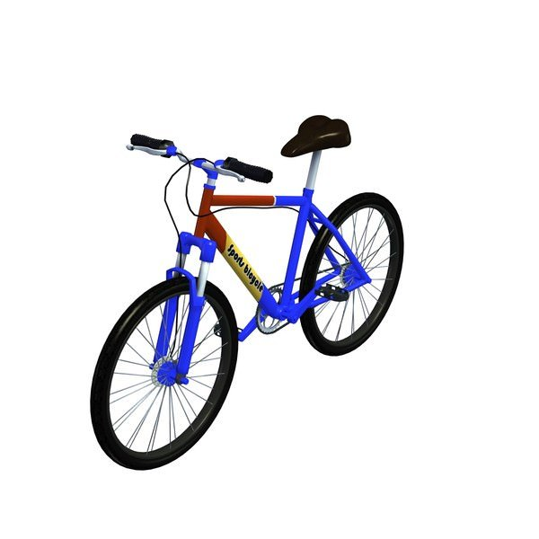
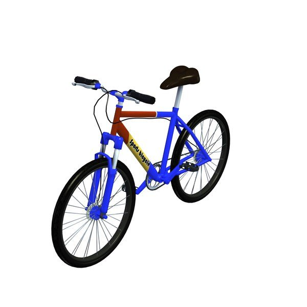
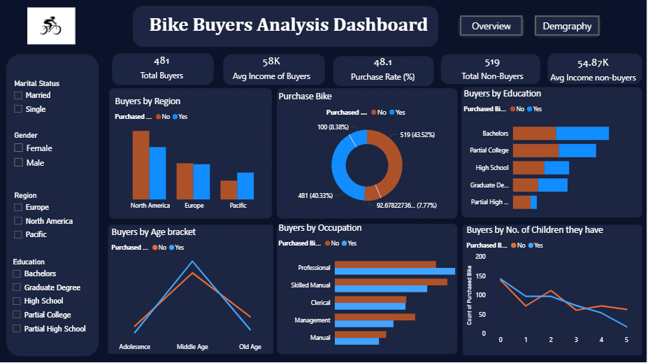
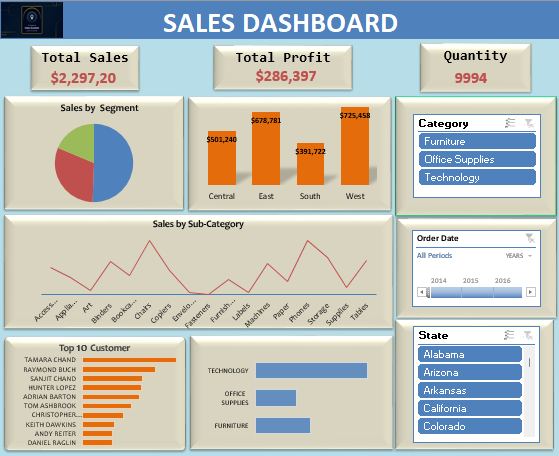
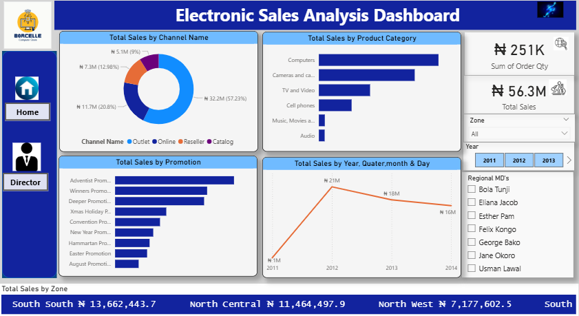

This project uses HR data from Palmoria Group, a manufacturing company, to diagnose gender-related risks (representation, pay equity, performance distribution)
and to model annual bonus payouts.The analysis is implemented as a production-style Power BI dashboard that
supports filter-driven exploration by Region and Department, and provides actionable recommendations to HR and leadership.
 

This project delivers a professional two-page Power BI dashboard analyzing bike buyer demographics and purchasing behavior.
Using a dataset of 1,000 customers, the dashboard reveals who buys bikes and why, comparing buyers vs non-buyers across income, age,
education, region, commute distance, and family size.
Key findings show that middle-aged professionals with higher incomes and shorter
commutes are the most likely to purchase bikes, while purchase likelihood decreases with more children.
These insights directly inform marketing strategy, product targeting, and regional expansion opportunities.

In this project, analyzed company sales data to uncover performance patterns, profitability trends, and high-value customer segments.
I visualized business performance across regions, categories, subcategories, and customers (covering the years 2014–2016).
The Dashboard brings together multiple key performance indicators (KPIs), including Total Sales,
Total Profit, and Quantity Sold and presents them in a visually engaging,
interactive format using slicers, timelines, and pivot charts.
Designed for executive decision-making, it provides a top-level overview of business
health while allowing dynamic filtering by Category, State, and Order Date for deeper insights.

This project explores global COVID-19 trends (2020–2024) using SQL-based data analysis.
I performed an end-to-end exploratory analysis of over 400k+ records from Our World in Data,
uncovering key insights into infection rates, death percentages, and vaccination progress
across countries and continents.
The project showcases my ability to clean, transform,
and analyze real-world data using advanced SQL functions such as window functions, CTEs,
and views, while delivering clear, data-driven insights and metrics ready for
visualization and decision-making.
In this project I created a real-world electronic sales
transactions report which covers the geopolitical Zones in Nigeria.
The goal is to showcase advanced data analytics skills — covering data cleaning, modelling,
exploratory analysis, DAX calculations, visualization design,
and secure report delivery (Row-Level Security).
The analysis highlights sales performance by channels, product categories, promotions,
and regions and demonstrates how insights can support executive decision-making.

In this project, I analyzed how the duration of Netflix movies has evolved over the years — uncovering insights into how
viewer preferences and production styles may have shifted. Using Python, Pandas, and Matplotlib, I explored real-world
data to visualize trends, compare movie runtimes across different periods, and identify patterns that reveal how the
streaming landscape has changed.
This analysis showcases my ability to transform raw data into meaningful stories through visualization
and interpretation — turning numbers into insights that explain how the entertainment industry continues to evolve..